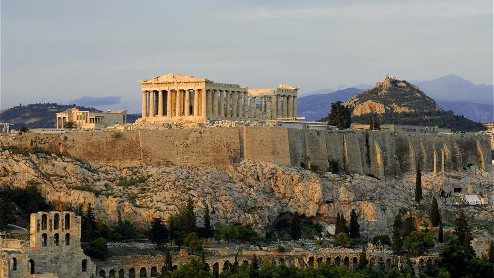

LITERATURA EN GRECIA

Homero es un poeta griego antiguo que es considerado como uno de los más grandes poetas épicos de la literatura. Se le atribuyen dos obras maestras, la "Ilíada" y la "Odisea", que son dos de las obras más influyentes y conocidas de la literatura griega antigua. Sin embargo, la identidad verdadera de Homero sigue siendo un misterio y no se sabe mucho acerca de su vida personal. Se cree que nació alrededor del siglo VIII a.C. en una región de Asia Menor o en la costa Egea de Grecia, pero no hay información fiable sobre su nacimiento, su vida y su muerte. A pesar de esto, la importancia de Homero en la literatura occidental es incuestionable. Su legado literario ha sido fundamental para la literatura épica y ha sido estudiado y admirado por siglos. La "Ilíada" y la "Odisea" han sido traducidas a muchos idiomas y continúan siendo lecturas populares y relevantes en la actualidad.

Safo fue una poeta griega antigua que nació en la isla de Lesbos alrededor del 630 a.C. Es considerada como una de las primeras poetisas de la literatura griega antigua y es conocida por su poesía lírica y sus elegías. Aunque no se sabe mucho acerca de su vida personal, se cree que Safo era de familia noble y que recibió una educación refinada. Además, se dice que tenía un gran amor por las musas y la poesía, y que su obra se caracteriza por su belleza y emotividad. A pesar de que solo fragmentos de sus obras se han conservado hasta nuestros días, su impacto en la literatura y la cultura griega es innegable. Safo ha sido admirada y estudiada a lo largo de los siglos y ha sido considerada como una de las poetas más importantes de la antigüedad. Su legado literario ha sido fundamental para la poesía lírica y ha sido una fuente de inspiración para muchos otros poetas a lo largo de la historia.
Oda I, a Afrodita Hija de Jove, sempiterna Cipria, varia y artera, veneranda diosa, oye mi ruego: con letales ansias no me atormentes. Antes desciende como en otro tiempo ya descendiste, la mansión del padre por mí dejando, mis amantes votos plácida oyendo. Tú al áureo carro presurosa uncías tus aves bellas, y a traerte luego, de sus alitas con batir frecuente, prestas tiraban. Ellas del cielo por el éter vago raudas llegaban a la tierra oscura; y tú, bañando tu inmortal semblante dulce sonrisa, «¿Cuál es tu pena? ¿Tu mayor deseo cuál?», preguntabas: «¿Para qué me invocas? ¿A quién tus redes, oh, mi Safo, buscan? ¿Quién te desprecia?» «¿Húyete alguno? Seguirate presto. ¿Dones desdeña? Te dará sus dones. ¿Besos no quiere? Cuando tú le esquives ha de besarte». Ve, y me libra del afán penoso; ven, cuanto el alma conseguir anhela tú se lo alcanza, y a mi lado siempre, siempre combate. Oda II, a su amante Lesbia, la dicha de los dioses prueba ese mancebo, frente a ti sentado, ese que goza de tu hablar suave, de una sonrisa. Mírolo ¡triste!; el corazón entonces ríndese opreso; de repente falta voz a mis fauces, mi trabada lengua tórnase muda. Súbito siento que sutil discurre dentro en mis venas ardorosa llama; huye la vista de mis ojos, zumban ya mis oídos. Toda me cubro de sudor helado, mas amarilla que la yerba quedo, tiemblo y, cercana de la muerte, exhalo débil suspiro.